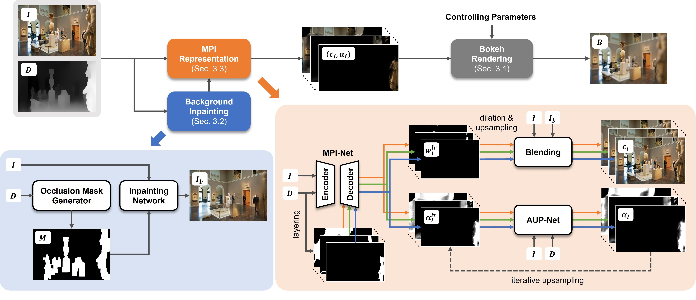

MPIB: An MPI-Based Bokeh Rendering Framework
for Realistic Partial Occlusion Effects
2Adobe Research
Video
Abstract
Partial occlusion effects are a phenomenon that blurry objects near a camera are semi-transparent, resulting in partial appearance of occluded background. However, it is challenging for existing bokeh rendering methods to simulate realistic partial occlusion effects due to the missing information of the occluded area in an all-in-focus image. Inspired by the learnable 3D scene representation, Multiplane Image (MPI), we attempt to address the partial occlusion by introducing a novel MPI-based high-resolution bokeh rendering framework, termed MPIB. To this end, we first present an analysis on how to apply the MPI representation to bokeh rendering. Based on this analysis, we propose an MPI representation module combined with a background inpainting module to implement high-resolution scene representation. This representation can then be reused to render various bokeh effects according to the controlling parameters. To train and test our model, we also design a ray-tracing-based bokeh generator for data generation. Extensive experiments on synthesized and real-world images validate the effectiveness and flexibility of this framework.
Method
-
Framework
-
Bokeh Generator
-
MPIB takes an all-in-focus image and a potentially imperfect disparity map as input to obtain a 3D scene representation of multiple RGBA planes. This representation is generated by an MPI representation module and a background inpainting module. Then, the scene representation can be reused to produce multiple bokeh images according to different controlling parameters.
 -
The ray-tracing-based bokeh generator is capable of creating a realistic bokeh image from a background RGB image and some foreground RGBA images with customized disparities and different controlling parameters. We design this bokeh generator for producing training and test data.
Visualization
-
Comparison
-
Animation
-
Animations on real-world images with different controlling parameters.
Blur Amount


Refocused Disparity


Gamma Value